CHM 2211 · Organic Chemistry II
Grignard Prelab: The Apparatus
The synthesis of triphenylmethanol starts with dry glassware put together the right way. Practice assembling it here before you do it at the bench.
Dry and assemble the glassware
A Grignard reagent is destroyed by water. Your glassware was washed, rinsed with acetone and left to dry for two days. Look at each piece before you use it, and dry anything that still shows water.
- Point at anything on the bench to see its name. The glassware and equipment are pictured and described under the bench, in “What is on the bench”.
- Click a piece (without dragging it) to look at it closely. From there you can rinse it with acetone from the wash bottle, or put it in the drying oven beside the hood, set at 110 °C.
- Drying takes time on the bench clock. “Speed up the wait” runs the clock faster.
Then build the apparatus in your handout’s figure, Apparatus for Experiment 35, from the glassware on the bench. Some pieces on the bench do not belong in it.
- Drag a piece and let go when its joint is close to the joint it should go on. A gold outline shows a piece it will join.
- As in the kit, two glass threads do not screw into each other: they are joined by a blue coupler, screwed onto one of them first.
- A piece that does not belong there is not joined, and a note below the bench says why.
- Let go of a piece away from any joint and it goes back to its place. Lift a piece off to take it apart: whatever is screwed onto it comes with it.
Setting up the fume hood
Looking at the
In the drying oven:
What is on the bench
The glassware is from a microscale kit. Its glass ends are threaded, so pieces are screwed together rather than pushed into ground-glass joints.
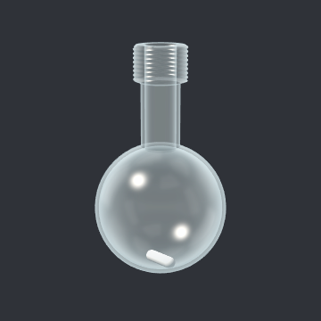
20-mL round-bottom flask
A flask with a round bottom, which heats evenly. It cannot stand on its own, so it sits in a cork ring on the bench. This one holds a stir bar: a small magnet coated in PTFE (Teflon), which a stirring hot plate spins from below.
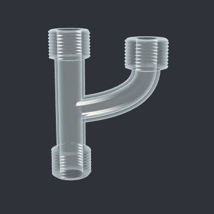
Claisen head
An adapter with one threaded end below and two arms above, so that two things can be attached over a single flask.
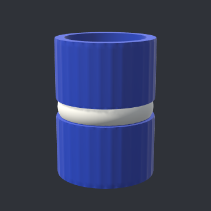
Blue coupler
A double screw cap of nylon with an O-ring inside. It joins two threaded glass ends end to end and seals the joint.
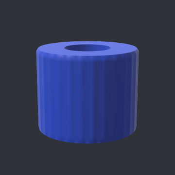
Rubber septum
A rubber disc in a screw cap with an open top. A needle can pass through the rubber, which closes again when the needle is pulled out, so a liquid can be added without opening the apparatus to the air.
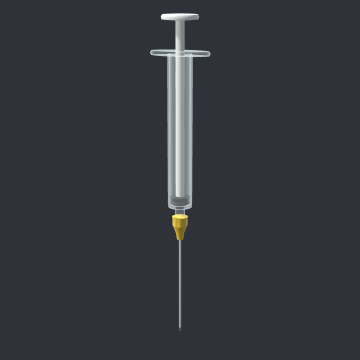
Syringe
A 1-mL plastic syringe, new from its packet, with a long needle, for adding a liquid in measured portions through a septum.
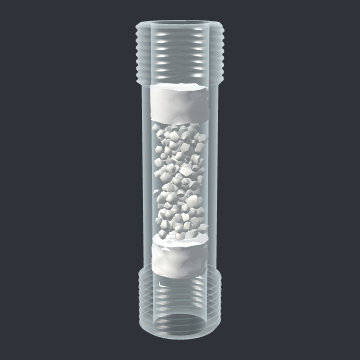
Drying tube, packed
A short glass tube filled with a drying agent, anhydrous calcium chloride (CaCl₂), held between two plugs of cotton. Air can pass through it, but the moisture in that air is held back by the drying agent.
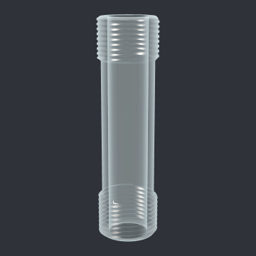
Drying tube, empty
The same tube before it is packed.
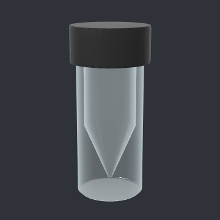
5-mL conical vial
A small vial with a screw cap whose inside narrows to a point, so that small amounts of liquid collect at the bottom and can be drawn up.
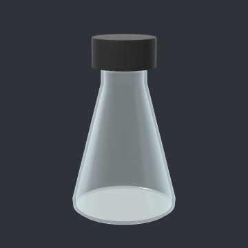
25-mL Erlenmeyer flask
A cone-shaped flask with a screw cap, for keeping a solvent closed between uses.
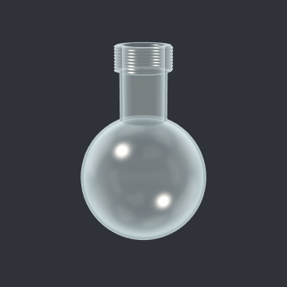
50-mL round-bottom flask
A larger round-bottom flask, with a wider neck.
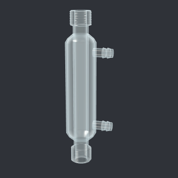
West condenser
A tube inside a water jacket. Cold water flows through the jacket, so vapor rising inside the tube condenses and runs back down.
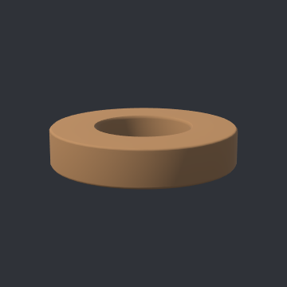
Cork ring
Holds a round-bottom flask upright on the bench.
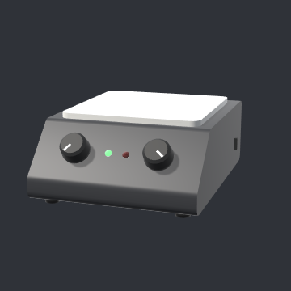
Stirring hot plate
Heats from below with no flame, and spins a stir bar inside a flask through a magnet under its ceramic top.
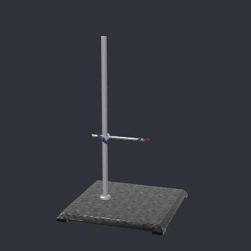
Ring stand and clamp
A heavy base and a rod. The clamp on the rod holds glassware at a fixed height.
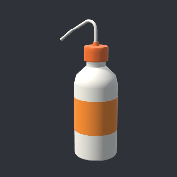
Wash bottle of acetone
A squeeze bottle for rinsing glassware with acetone, a solvent that mixes with water and evaporates quickly. Acetone is flammable, so it is kept in the hood.
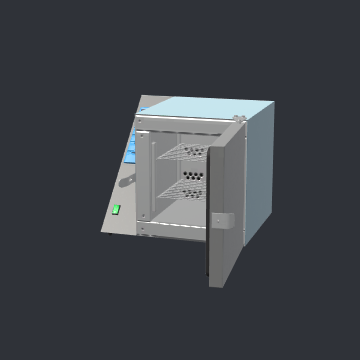
Drying oven
An oven for drying glassware, set at 110 °C. It stands on the bench beside the hood: an oven’s heating elements could ignite solvent vapor.
Hidden state (shown only with ?debug=1)
| Piece | Water | Acetone | °C | Dry | In oven |
|---|